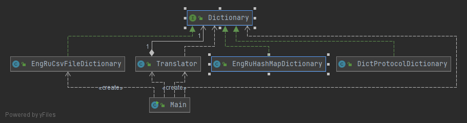

<p style="font-size: large">
    After the refactoring we are ready to change the current dictionary implementation to a new one.
</p>
New structure removed some of the dependencies and make the application more flexible.

<hr>
<h2>
    Main goal:
    <ol>
        <li>
            Change the csv dictionary implementation to a new that uses a DICT protocol.<br>
            Host is <a href="https://dict.org/bin/Dict">dict.org</a> and the dictionary name is "fd-eng-rus".
        </li>
    </ol>
</h2>

